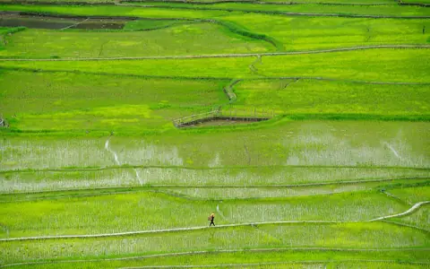
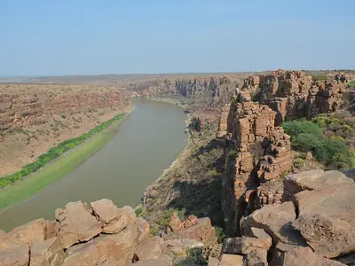
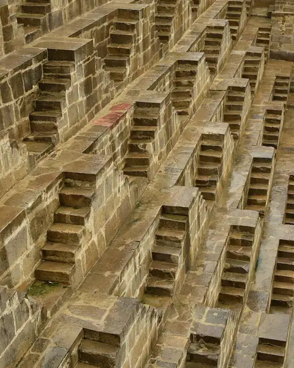
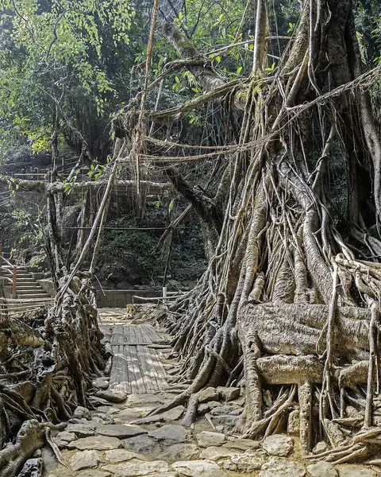

Trip planner Made for India
Discover India beyond the usual.
Tell Traviora where you're headed, what you can spend and how many days you've got. You get two day-by-day plans for the same trip: one for hidden gems, one for the icons.
- No sign-up
- Budget in rupees
- Two plans per trip


Hidden gems + the icons
01 How it works
Three questions in. Two plans out.
-
Where and how long
A city or region in India, plus your number of days.
-
Budget and crew
Your total budget in rupees and how many of you are going.
-
Your kind of trip
Nature, History, Food or Adventure. Pick any, or none.
-
Two plans, side by side
Both planned day by day. It can take up to a minute.

02 What you get
Less tab-hopping. More going.
-
Day by day, stop by stop
Each day lists places to see, the time they need and a rough cost.
-
Hidden gems, on purpose
One plan skips the obvious for lesser-known places that fit your interests.
-
Built around your budget
Your total in rupees, your days and your group size shape the plan. Costs are AI estimates, not quotes.
-
Know a place before you go
A map search link for every stop, plus a Wikipedia photo and Underrated Score when a matching article is found.
03 The planner
Plan a trip in India, two ways
Same destination, two different trips. Compare them side by side, then mix and match.

Each place links to a map search, and to Wikipedia when a matching article is found.